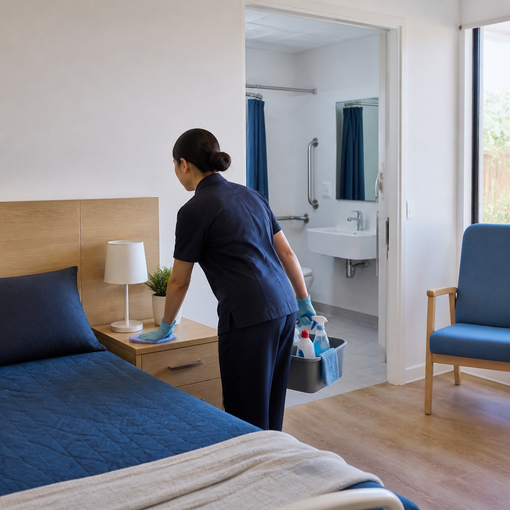

Namoli Healthcare keeps respite care centres safe and hygienic for the guests who stay there, the staff who support them and the families who trust you with their people. Drawing on more than 30 years of healthcare cleaning experience, we deliver documented cleaning programmes backed by ATP testing and audit-ready reporting across Brisbane and Melbourne.
Respite centres carry an infection risk that ordinary commercial premises do not. Rooms turn over constantly, guests arrive from different households and care settings, bathrooms and living spaces are shared, and many guests are medically vulnerable. That calls for protocols standard commercial cleaning was never built for. Ours are built around how respite centres actually run.
STA and MTA centres where rooms turn over week to week. Documented changeover cleans between guests cover high-touch surfaces, ensuites, bed frames and mattresses, shared equipment and linen handling, scheduled around your bookings so rooms are ready on arrival.
Overnight respite houses, centre-based day programmes, therapy and activity rooms and shared kitchens, cleaned by teams who hold NDIS Worker Screening Checks and know how to work respectfully around participants and support workers mid-programme.
Cottage respite, centre-based day respite and dementia-specific programmes. Familiar faces, consistent routines and quiet, low-disruption cleaning planned around the activity programme, with secure access, wandering-risk and chemical storage protocols followed to the letter.
Plenty of respite sits outside the NDIS, run by charities, church groups and community organisations on tight budgets. You get the same screened teams, the same protocols and the same reporting, scoped to what your funding realistically supports.
Quality and centre managers need clear evidence of cleaning performance. Namoli provides documented cleaning programmes that support accreditation reviews, quality audits and family enquiries, whether you run a single respite house or centres across two states.
Cleaning personnel undergo background screening, including NDIS Worker Screening Checks and Police Checks as required by each centre, and hold infection control training suited to disability, dementia and aged care respite settings.
Cleaning programmes developed with reference to the NDIS Practice Standards and, where a centre receives aged care funding, the applicable Aged Care Quality Standards.
One set of protocols, one account manager and one reporting format across your sites, with audit results consolidated at group level so you can compare centres and catch performance gaps early.
Cleaning schedules, Safety Data Sheets, training and screening records, audit results and corrective action logs are maintained and available for review.
ATP testing and 3M protein pens measure what the eye cannot see, giving your quality team objective evidence of cleaning performance between stays.
"Namoli are proactive and thorough. They perform regular audits, recommend practical solutions, and maintain clear communication across our sites."
- Kim, Client

Healthcare cleaning specialists with more than 30 years in hospitals, clinics and care settings. This is our speciality, not a sideline to office cleaning.
ATP testing, protein testing, regular audits and clear reporting give your quality team evidence of performance and early visibility of emerging issues.
Our "Three-Win Philosophy" creates employment pathways for people facing barriers to work, while our partnership with TreeLabs supports tree planting.
Dedicated local teams across metropolitan Brisbane and Melbourne, with stable site teams and a named supervisor for each centre.
We clean respite care centres of every kind: NDIS-funded short and medium term accommodation, disability respite and day programme centres, dementia and aged care respite services, and respite run by charitable and not-for-profit organisations outside the NDIS. Our experience also spans hospitals, clinics and medical centres, so each centre gets proven healthcare cleaning practice rather than commercial cleaning with a care label on it.
No. Many of the respite centres we clean are NDIS funded, and many are operated by charitable, not-for-profit or community organisations funded another way. Our cleaning programmes, screening and reporting work the same either way. What changes is the compliance framework we document against.
No. Namoli Healthcare is a commercial healthcare cleaning provider and works only with the organisations that operate respite care centres. We do not clean private homes and we do not deliver in-home supports to individual participants.
Yes. Multi-site operators receive a single account manager, shared protocols, consistent reporting across every centre and a named supervisor for each site. Group-level audit results let your quality team compare centres and answer organisation-wide questions without chasing reports site by site.
Our cleaning programmes are developed with reference to the NDIS Practice Standards and, where a centre receives aged care funding, the applicable Aged Care Quality Standards. For every site we maintain cleaning schedules, Safety Data Sheets, training and screening records, audit results and corrective action logs to support accreditation and quality audits.
Respite rooms turn over constantly, so we run a documented changeover clean between guests covering all high-touch surfaces, bathrooms and ensuites, bed frames and mattresses, mobility and shared equipment, and linen handling. Turnarounds are scheduled around your bookings so rooms are ready when the next guest arrives.
We use ATP testing and 3M protein pens to measure surface cleanliness objectively rather than relying on visual inspection alone, and we conduct regular quality audits. Results and recommendations are reported to your quality team, providing clear evidence of environmental cleaning performance.
Yes. Namoli cleaning personnel undergo background screening, including NDIS Worker Screening Checks and Police Checks as required by each centre, and receive specialised training in infection control and respectful conduct around older people and people with disability.
Yes. Our cleaners keep consistent routines and familiar rosters, minimise noise and disruption, work around the centre's activity programme, use low-odour products where appropriate, and follow secure access and chemical storage protocols to the letter.
Yes. We maintain outbreak response procedures for respite settings, covering enhanced terminal cleaning, isolation protocols, colour-coded equipment and documented sign-off, so your centre can respond quickly to gastro, influenza and other outbreaks in a shared living environment.
Whether you run a single respite house or respite centres across Brisbane and Melbourne, Namoli Healthcare delivers cleaning performance your team can verify and the families who use your service can trust.
Book a discovery session and we will assess your centre, review your current cleaning programme and identify the gaps worth closing first.